COc1cc(C=O)ccc1OArticle Schemes 2-4 and SI preparations pp3-6, including racemic reference and benzyl-bromide partner preparation. S-series four-step analogous sequence has no individually drawn intermediates: represented as four operation stages with both coupling partners. Wavy alpha-center in 5/13 remains a mixture, not an assigned stereoisomer. Facts compiled deterministically; independent review pending.
完整 JSON · 逐步 CSV · 路线序列 · SDF · HRMS 核对
| 事件 | 分子连接 | 报告产率 | Canonical reaction SMILES |
|---|---|---|---|
| E01 | 9 + BnBr → 10 | 10: 98% | BrCc1ccccc1.COc1cc(C=O)ccc1O>>COc1cc(C=O)ccc1OCc1ccccc1 |
| E02 | 10 + Wittig-salt → 11 | 11: 64% | COC[P+](c1ccccc1)(c1ccccc1)c1ccccc1.COc1cc(C=O)ccc1OCc1ccccc1.[Cl-]>>COc1cc(CC=O)ccc1OCc1ccccc1 |
| E03 | 11 + 12 → 8 | 8: 92% | COC(=O)CP(=O)(OC)OC.COc1cc(CC=O)ccc1OCc1ccccc1>>COC(=O)/C=C/Cc1ccc(OCc2ccccc2)c(OC)c1 |
| E04 | 8 + CH3MgBr → 7p | 7p: 62% | COC(=O)/C=C/Cc1ccc(OCc2ccccc2)c(OC)c1.[Br-].[CH3-].[Mg+2]>>COC(=O)C[C@H](C)Cc1ccc(OCc2ccccc2)c(OC)c1 |
| E05 | 8 + CH3MgBr → 7m | 7m: 62% | COC(=O)/C=C/Cc1ccc(OCc2ccccc2)c(OC)c1.[Br-].[CH3-].[Mg+2]>>COC(=O)C[C@@H](C)Cc1ccc(OCc2ccccc2)c(OC)c1 |
| E06 | 8 + CH3MgBr → rac-7 | rac-7: 72% | COC(=O)/C=C/Cc1ccc(OCc2ccccc2)c(OC)c1.[Br-].[CH3-].[Mg+2]>>COC(=O)CC(C)Cc1ccc(OCc2ccccc2)c(OC)c1 |
| E07 | piperonyl-alcohol → 6 | 6: 93% | OCc1ccc2c(c1)OCO2>>BrCc1ccc2c(c1)OCO2 |
| E08 | 7p + 6 → 5 | 64% combined mixture yield | BrCc1ccc2c(c1)OCO2.COC(=O)C[C@H](C)Cc1ccc(OCc2ccccc2)c(OC)c1>>COC(=O)C(Cc1ccc2c(c1)OCO2)[C@H](C)Cc1ccc(OCc2ccccc2)c(OC)c1 |
| E09 | 5 → 13 | 63% combined mixture yield | COC(=O)C(Cc1ccc2c(c1)OCO2)[C@H](C)Cc1ccc(OCc2ccccc2)c(OC)c1>>COc1cc(C[C@@H](C)C(COS(C)(=O)=O)Cc2ccc3c(c2)OCO3)ccc1OCc1ccccc1 |
| E10 | 13 → 14 | 14: 58% | COc1cc(C[C@@H](C)C(COS(C)(=O)=O)Cc2ccc3c(c2)OCO3)ccc1OCc1ccccc1>>C=C(Cc1ccc2c(c1)OCO2)[C@H](C)Cc1ccc(OCc2ccccc2)c(OC)c1 |
| E11 | 14 → 1 | 1: 56% | C=C(Cc1ccc2c(c1)OCO2)[C@H](C)Cc1ccc(OCc2ccccc2)c(OC)c1>>C=C(Cc1ccc2c(c1)OCO2)[C@H](C)Cc1ccc(O)c(OC)c1 |
| E12 | 7m + 6 → 1p | not reported | BrCc1ccc2c(c1)OCO2.COC(=O)C[C@@H](C)Cc1ccc(OCc2ccccc2)c(OC)c1>>C=C(Cc1ccc2c(c1)OCO2)[C@@H](C)Cc1ccc(O)c(OC)c1 |
COc1cc(C=O)ccc1O
BrCc1ccccc1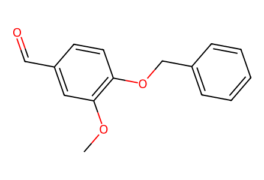
COc1cc(C=O)ccc1OCc1ccccc1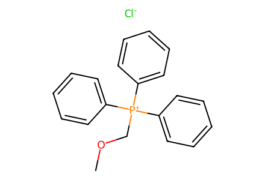
COC[P+](c1ccccc1)(c1ccccc1)c1ccccc1.[Cl-]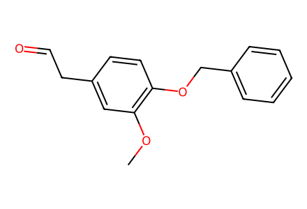
COc1cc(CC=O)ccc1OCc1ccccc1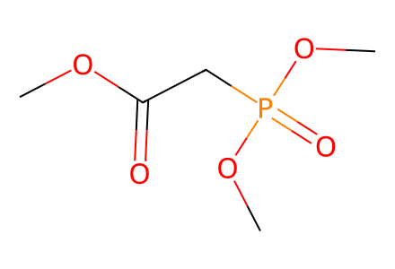
COC(=O)CP(=O)(OC)OC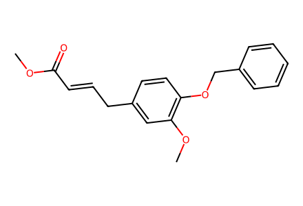
COC(=O)/C=C/Cc1ccc(OCc2ccccc2)c(OC)c1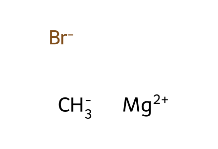
[Br-].[CH3-].[Mg+2]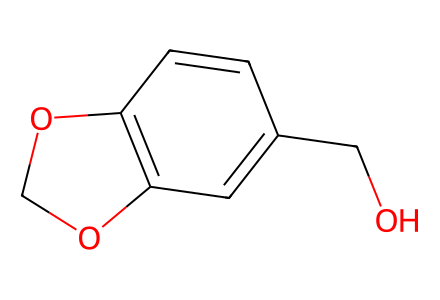
OCc1ccc2c(c1)OCO2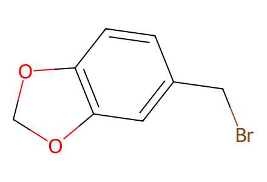
BrCc1ccc2c(c1)OCO2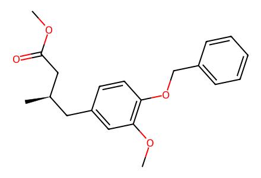
COC(=O)C[C@H](C)Cc1ccc(OCc2ccccc2)c(OC)c1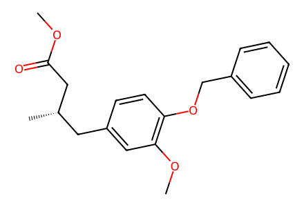
COC(=O)C[C@@H](C)Cc1ccc(OCc2ccccc2)c(OC)c1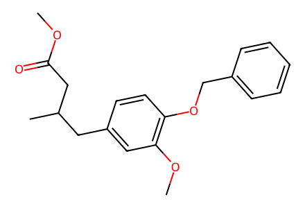
COC(=O)CC(C)Cc1ccc(OCc2ccccc2)c(OC)c1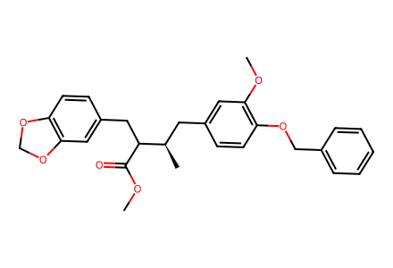
COC(=O)C(Cc1ccc2c(c1)OCO2)[C@H](C)Cc1ccc(OCc2ccccc2)c(OC)c1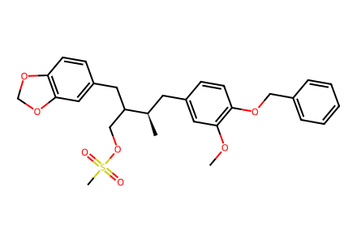
COc1cc(C[C@@H](C)C(COS(C)(=O)=O)Cc2ccc3c(c2)OCO3)ccc1OCc1ccccc1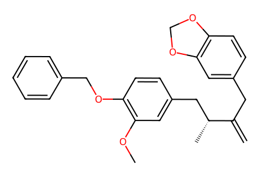
C=C(Cc1ccc2c(c1)OCO2)[C@H](C)Cc1ccc(OCc2ccccc2)c(OC)c1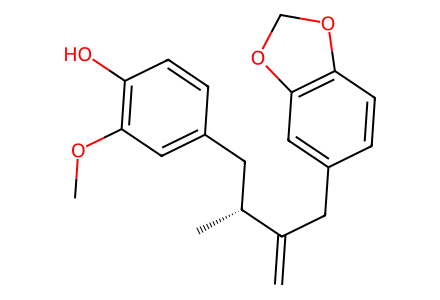
C=C(Cc1ccc2c(c1)OCO2)[C@H](C)Cc1ccc(O)c(OC)c1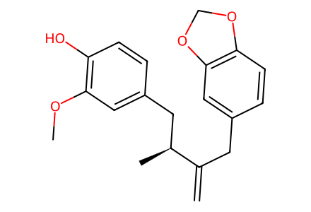
C=C(Cc1ccc2c(c1)OCO2)[C@@H](C)Cc1ccc(O)c(OC)c1